Daily Art Lesson
每天用一幅作品，练一个观察方法。
从古今中外的绘画、版画、雕塑、摄影、设计和地方艺术中选择代表作品，把艺术史知识转化成可练习的绘画技能。

《克提西斯》马赛克：用碎石方向塑造面部转折
先分出脸、发与衣袍的大形，再让成组短线绕着五官和衣褶转向，并把最强深浅对比留在面部。

韩幹《照夜白图》：用牵引线与反向弧画出蓄势
先用系柱和系绳建立约束方向，再以相互抵抗的颈背弧线组织蓄势，并把线条密度集中到头颈。

东爪哇《车与驾车人拉玩具》：用轮轴与长杆画清运动结构
先用牵引杆建立贯穿全车的长轴，再以轮心和接地点校准车轮，并用停线区分交叉杆件的前后。

马维尔《卢森堡花园喷泉》：用框中框稳住建筑层次
先比较纸页、照片和建筑的逐级边框，再以共享中轴套合山花、壁龛与水池，并把内凹空间归并成暗形。

德穆斯《孤挺花》：用透明叠色保留水彩光感
先用淡洗安排花、叶和背景，再在干燥色层上逐次加深，并以纸白和窄浅边保持清楚交叠。

巴托尔迪《自由照耀世界》：用水道汇聚画出全景纵深
先以地平线稳定全景，再让两侧岸线向远方开口收拢，并用船只与城市细节的尺度递减校验距离。

玛雅《坐姿贵族贝壳饰板》：用线条轻重读出浅刻层次
先以连续外轮廓锁定坐姿，再在手、海螺和肢体交叠处停线，并用轻重差异区分主体与周围小图形。

杜米埃《鉴赏家》：用明暗团块概括坐姿
先用头、胸与膝搭出后靠姿态，再以少量交叠边线说明前后，并把碎线归并成连续明暗团块。

拉苏里王朝星盘：用同心圆与放射线组织精密结构
先以共享圆心稳定多层刻度，再用少量放射线校准方向，并靠线条粗细与断点分清活动部件和底层网格。

广重《大桥骤雨》：用方向对冲画出风雨动势
先以宽阔桥面稳定空间，再让成组斜雨与桥身交叉，并用小人物的前倾姿态回应骤雨力量。

泰国藏经柜：用金色剪影分组繁密叙事
先用硬朗外框稳定柜体，再把人物归成大小不同的金色亮组，并以暗色间隔连接观看路线。

毛利绿石人形坠：用负形校准紧凑造型
先压出厚实的整体剪影，再把臂内与下部孔洞当作形来测量，并以横向对位保留左右差异。

湿婆舞王像：用弧线与支点画出动态平衡
先以圆环限定动作范围，再用躯干与四肢长轴展开舞姿，并让重心回到唯一落脚支点。

伊迪亚王后吊坠面具：用点列疏密组织装饰节奏
先用中轴稳住五官，再把额上小圆点与外缘装饰归成尺度不同、疏密分明的重复层次。

叶欣《山水》：用疏密与淡墨画出远近层次
把最密的线集中在近岸屋舍与树石，以横向留白展开水面，再让最大主峰以浅线自然后退。

哈比布拉《群鸟集会》：用主群与流向组织繁密群像
先以中央孔雀锁定视觉锚点，再把邻近鸟类归成疏密不同的支群，并用溪流和地势串起观看路线。

高丽青瓷《双童莲纹碗》：用同心椭圆画准俯视器皿
先以长短轴画稳碗口，再用内底小圆检查同心关系，最后让浅明暗与顺壁纹样共同说明凹面。

莫切《衬衣》：用衣片结构组织连续纹样
先以外轮廓、开口和接缝建立衣片地图，再用同宽阶梯路径组织动物形，并以小尺度边带收住下缘。

迈布里奇《运动中的动物姿态》：用关键帧画清奔马步态
先固定躯干和地面线，再比较支撑、后蹬与腾空阶段，用少数差异清楚的关键帧组织连续动作。

埃内亚·维科《犀牛》：用轮廓重叠画出铠甲结构
先以连续外轮廓锁定重量，再用被截断的边线说明壳片搭接，最后让少量纹理顺着各块曲面转向。

伊朗《凤凰纹瓷砖》：用重复曲线组织繁密纹样
先用长尾主曲线统领运动，再把羽片、云头和花叶归成重复单元，以大中小和疏密变化留住主体。

古埃及《河马“威廉”》：用弧带方向画出圆厚体积
先把头身归并成低矮圆厚的主块，再让植物线纹随肩腹转向，并以疏密和边缘截断暗示纹样绕向背面。

维米尔《持水罐的年轻女子》：用边缘软硬画出室内光
把硬边留给窗框、桌缘和器物节点，在头巾与衣袖转面使用软边，再让少量受光轮廓融入墙面。
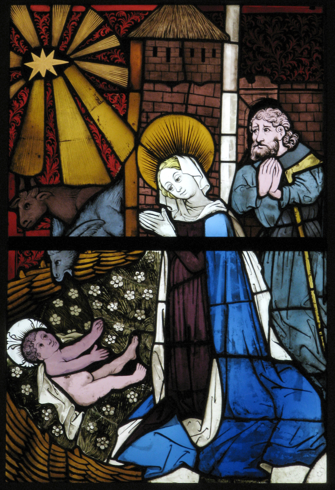
德国《耶稣诞生彩窗》：用铅线分区画清明暗色块
先把复杂场景压成暗、中、亮三档，再用共享铅线封闭玻璃色区，最后以一处小亮形集中人物焦点。
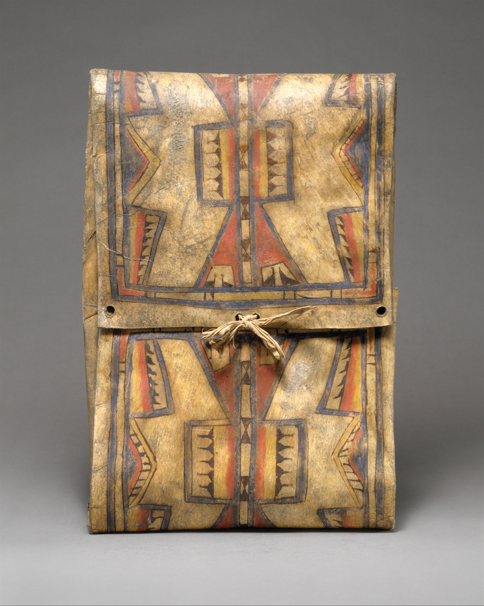
夏延族《Parfleche 生皮包》：用折角对位画清几何包袋
先用外框和中轴稳定高宽，再把斜线接到明确边缘节点，最后让色块与系带服从折面和闭合结构。
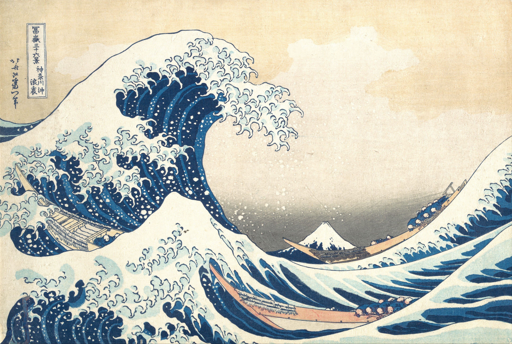
葛饰北斋《神奈川冲浪里》：用三级尺度画出巨浪与远山
先放大前景巨浪，再把船压成长形中尺度，并给远山留出安静空隙，用大、中、小三档建立海景深度。
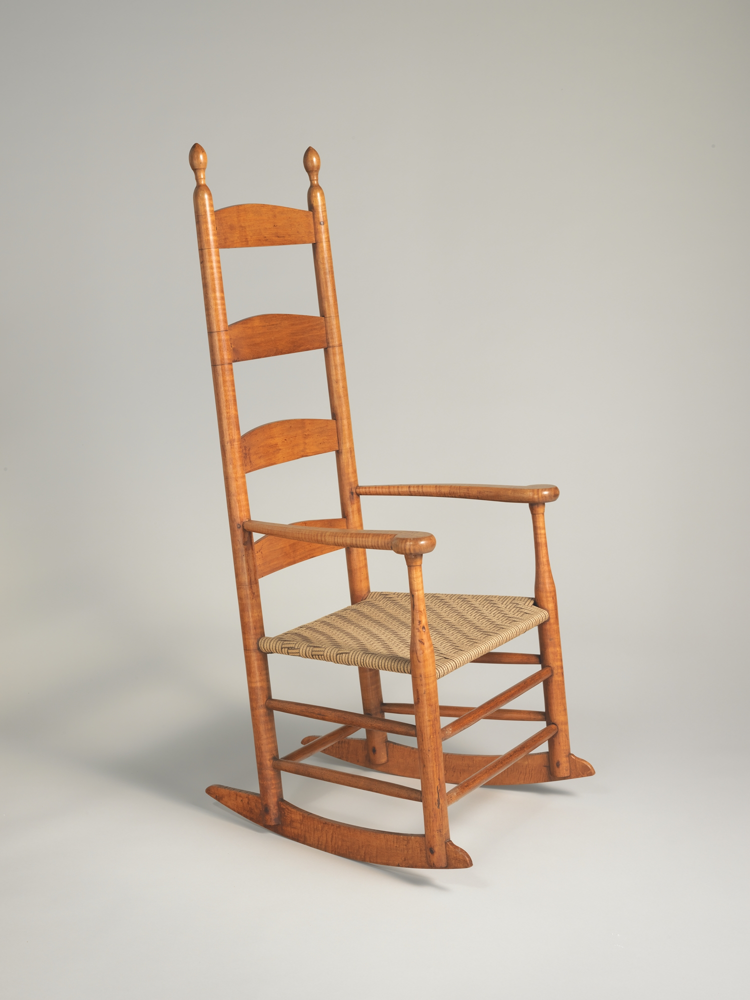
夏克《摇椅》：用连续弧线画稳家具结构
先连接靠背、座面与支腿的承重框架，再标清木件交接节点，最后用长而缓的连续底弧画出摇椅的稳定与摇动。
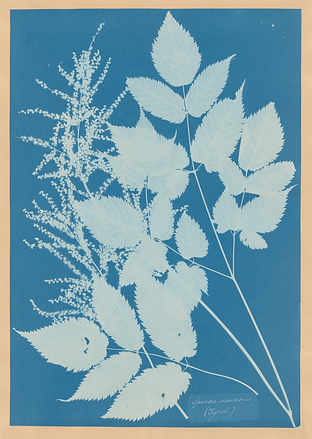
安娜·阿特金斯《Spiraea aruncus》：用枝轴和间隙画清植物层次
先用主枝连接生长节点，再比较侧枝的角度与长度，最后把背景间隙当作形，画清密集枝叶的重叠层次。
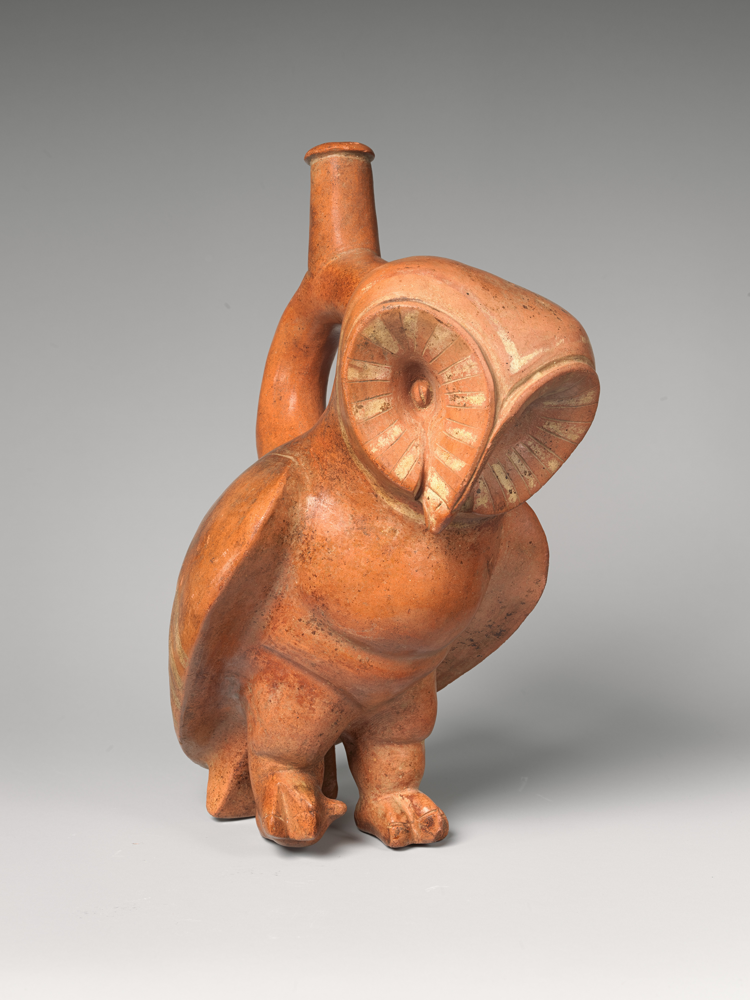
莫切《猫头鹰马镫口瓶》：用轮廓转折画出陶器体积
先以中轴连接瓶口、面部和底部，再标出肩腹轮廓的宽窄转折，最后让大明暗与羽纹共同服从瓶身曲面。
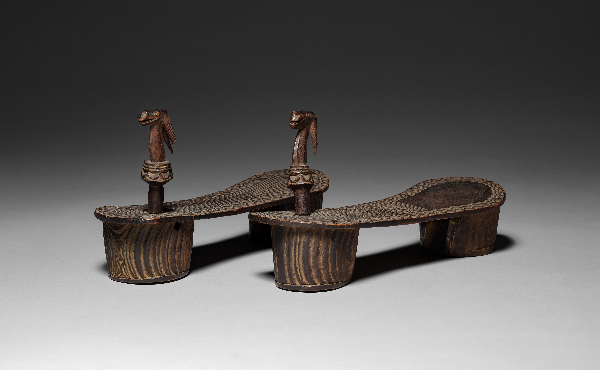
中非木屐：用成对比较画清形制差异
先用共同基线比较四个端点，再以空隙检查两只鞋底的宽窄变化，最后把趾柱与装饰放回结构位置。
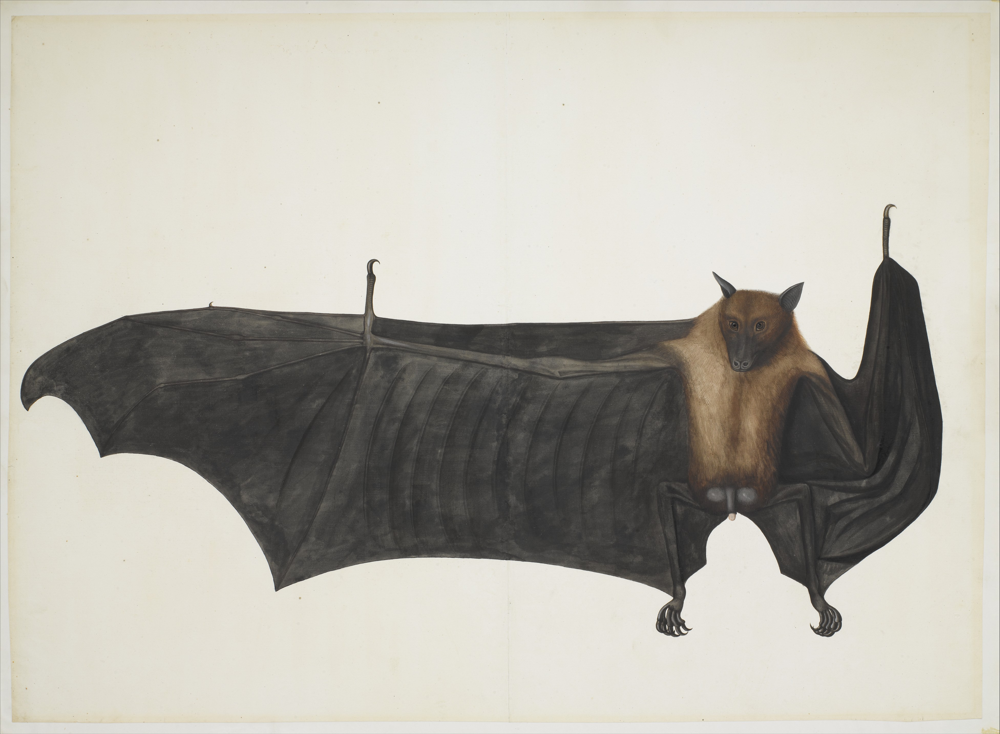
《大印度果蝠》：用放射骨架画开翼膜
先用身体锚点连接两翼，再以放射长线撑开翼膜，并通过扇区宽窄、转折和遮挡画清一侧展开、另一侧收拢。
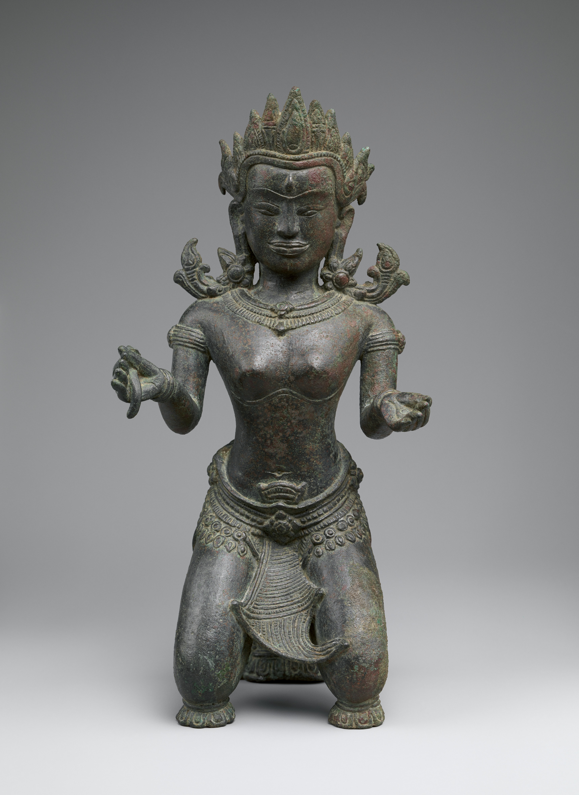
吴哥时期《跪姿女神》：用支点和折线画稳跪姿
先用头、胸和骨盆建立连续躯干轴，再确认膝部承托范围，并以方向明确的折线组织下肢，让跪姿低伏却不失平衡。
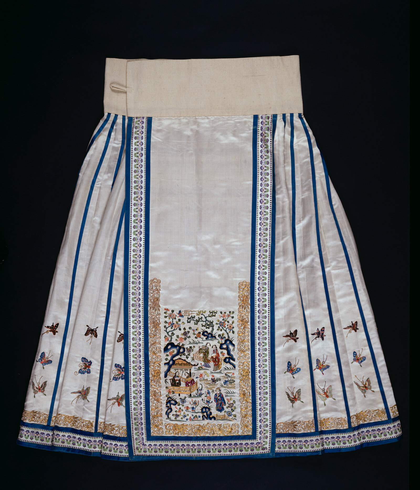
清代女裙：用主面板和竖向分带组织装饰
先用中央主面板集中复杂图像，再让竖线随裙幅展开，并以连续下缘连接左右分区，让丰富纹样保持清楚层级。
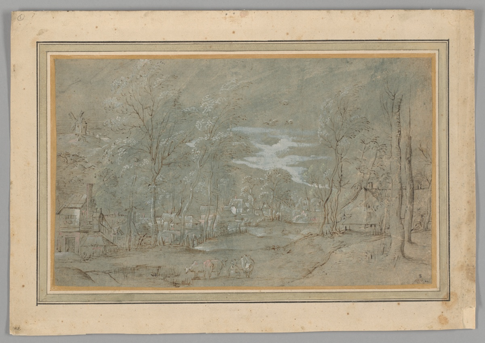
“小风景画大师”《树林中的村庄》：用有色纸三值画出空间
让有色纸承担中间调，再用暗线连接树木、房屋和地面结构，并把白色集中在少量受光节点，建立清楚而透气的空间。

奥斯曼《清真寺灯》：用悬挂点画稳垂吊器物
先用总吊点和左右悬挂点建立受力三角，再让器物重心落在竖向中线附近，并用环耳的完整与遮挡说明环向结构。

曼加伊亚《仪式用锛》：用材质分段画清复合工具
先分出长柄、接合区与石刃的比例，再用长线、块面和交叉短线区分木、石与纤维，让复合工具的结构清楚可读。

玛雅《王室女性浮雕板》：用线面层级画清浅浮雕
先圈出人物的最大外轮廓，再用重、中、轻三档线整理部件与纹样，并把凹面归成完整留白。

文森特·梵高《卧室》：用限色分区画清室内空间
先把墙、地和家具压成三类大色区，再用五种主色连接分散物件，并把清楚轮廓留在冷暖交界处。

古埃及《进献供品的诺姆神祇》：用头脚基线组织行进人物
先用头部与脚部两条基线统一人物高度，再让躯干朝向一致，并以收放交替的步距画出队列的行进节拍。

贝宁王国《伊约巴·伊迪亚吊坠面具》：用同心轮廓组织正面头像
先稳住中央面形，再把装饰归成内外两圈，并用中央高、两侧低的重复变化组织冠饰，让复杂头像保持清楚层级。

德巴尔巴里《威尼斯鸟瞰图》：用尺度分级整理城市细节
先分城市与水域的大形，再以大锚点、中分区和小纹理建立三级尺度，并用密、中、疏的线条安排阅读顺序。

《七宝山图》：用跨屏主线连接连续山水
先用一条主线跨过屏缝，再让山坡与空白通道在边缘接续，并以“密—疏—密”的段落组织长画面的呼吸。

《门前的黑人骑手》：用门洞框景突出深色主体
先用门洞建立画中框，再把人与马归并成深色剪影，并只在关键轮廓旁加强明暗差，让主体集中而不僵硬。

东北昆士兰《雨林盾》：用长线分区组织狭长画面
先让两三条长线串起上下，再以长短线段、错位停顿和疏密间隔分区，让狭长画面连贯而不单调。

歌川广重《大桥骤雨》：用线条疏密画出雨中空间
先用统一方向组织雨势，再以成束与停顿改变密度，并保留桥、河和远岸的明度层次，让骤雨密集却不压平空间。

印度青铜时代《拟人形器》：用中轴和负形画稳抽象轮廓
先用中轴比较左右重量，再把回卷和下肢之间的空白当作形来画，练习用少量轮廓建立稳定又不僵硬的抽象造型。

伊朗《韦德杯》：先守住字骨，再让装饰字活起来
先用主干和转折守住字的读法，再让人物、鸟和动物承担笔画，练习把装饰字设计得清楚又有想象力。

廷比沙肖肖尼《罐形篮》：用轮廓分带表现圆鼓器形
先找最宽处与收口，再让横带和重复纹样随弧面逐渐压缩，练习不用复杂明暗也能画出器物的包裹感。

泰国《帕玛莱生平故事图册》：用场景分组讲清连续叙事
从人物成组、画面停顿和动作连接入手，练习把三幕小故事画得顺序清楚、角色可辨。

楚文化《鹤与蛇》：用遮挡和轮廓接续理清交错形体
从前后分层、断线接续和线条轻重入手，练习把枝条、绳结与动物形体的复杂穿插画得清楚而不乱。

库巴《拉菲草刺绣绒面布》：用错位和截断让重复纹样活起来
从几何家族、局部错位和画外延续入手，练习让规则纹样保持秩序，又不落入机械复制。

丹尼尔·帕布斯特《柜》：用中轴和分区把复杂家具画稳
从中轴校准、上下左右分区和疏密主次入手，练习把带装饰的家具、立面和器物先画稳，再慢慢加细节。

扬·利文斯《书籍静物》：用大暗面把深色静物画稳
从暗面归并、前后遮挡和少量高光控制入手，练习把书、器皿和深色静物画得集中、结实又不乱。

梅斯卡拉《建筑模型》：用减法概括把建筑体块画稳
从外轮廓、实墙与空洞比例、转折明暗入手，练习把小建筑和门楼速写画得更稳、更结实。

《镂空窗屏（Jali）》：用负形和重复几何把复杂纹样画得又稳又透
从孔洞负形、主次节奏和石材厚度入手，练习把花格、栏杆和装饰纹样画得清楚、通透又不碎。

《勃艮第公爵菲利普墓上的哀悼者》：用布褶大关系画出被遮住的人体重量
从布料的大块垂坠、收束点和连续暗面入手，练习在披袍人物里先立重心，再补褶子的细节节奏。
温斯洛·霍默《湾流》：用大斜线和波浪分组把海面画出压迫感
从船身倾斜、海浪走势和主体包围关系入手，练习先整理大运动方向，再把复杂海面压成清楚的前中后节奏。

斯蒂格利茨《The Steerage》：用对角线分区把复杂人群画得更有秩序
从主斜线、上下分层和黑白大关系入手，练习把多人场景先整理成稳定的大结构，再往里放人物细节。

劳特累克《日本沙发》：用剪影、裁切和留白把海报画得更有戏
从人物外轮廓、边缘裁切和大色面留白入手，练习把人物海报画得更响亮、更集中。

伊兹尼克《花间双鸟纹盘》：用疏密节奏把装饰画面画活
从回旋主线、花叶间距和勾线收形入手，练习把圆形装饰画面画得既丰富又有秩序。
尾形光琳《八桥图屏风》：用斜线节奏组织装饰性画面
从斜桥主线、花丛变奏和大面积留白入手，练习把装饰性花卉画面收紧、理顺并画出呼吸感。

皮拉内西《吊桥》：用重复透视把空间拉深
从台阶、拱门、桥面和远处亮口的层层递进入手，练习把复杂建筑场景画得有秩序、有深度。

阿瑟莱因《受威胁的天鹅》：用 S 形主线带动画面的张力
从脖颈主线、翅膀展开和黑白对比的集中关系入手，练习先抓姿态大势，再安排局部细节。

塞尚《苹果篮》：用倾斜透视把静物画得更稳
从瓶子的垂直轴、果篮前倾和桌布承托关系入手，练习让静物有变化、有张力，但整体仍然站得住。

穆夏《黄道带》：用竖向节奏把装饰画面收紧
从主轴、边框和重复曲线的大小变化入手，练习让装饰性画面既丰富又有清楚的观看顺序。

《倒牛奶的女仆》：用单侧窗光画出安静而结实的体积
从大明暗分组、亮部冷暖到边缘松紧入手，练习在安静的室内场景里把体积画得稳定、厚实又不碎。
《青年库罗斯大理石像》：从正面站姿里看重量轴线
从中轴线、受力腿和几何块面出发，练习把看似对称的人物站姿画得稳定又不僵硬。

《独角兽在花园中休憩》：用剪影和花纹组织装饰性画面
从主体外轮廓、重复花叶和背景疏密关系中，练习先抓大形，再安排装饰性的节奏变化。

韩干《照夜白图》：用线条画出力量与性格
从马的颈部、背线、四肢和绳索关系中，练习用线条表达姿态、力量和情绪。

梵高《麦田与柏树》：用笔触方向组织画面运动
从麦田、柏树、云和山脉的方向性笔触中，练习用笔触带动视线和节奏。

修拉《大碗岛的星期天下午》：用色点训练色彩并置
从点彩、冷暖关系和重复节奏中，练习让颜色在画面上保持明亮、清楚而有秩序。

葛饰北斋《神奈川冲浪里》：用曲线组织画面的力量
从浪形、富士山和船只的大小关系中，学习主次、负形、方向感和画面张力。